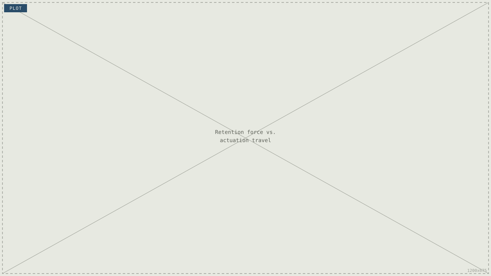
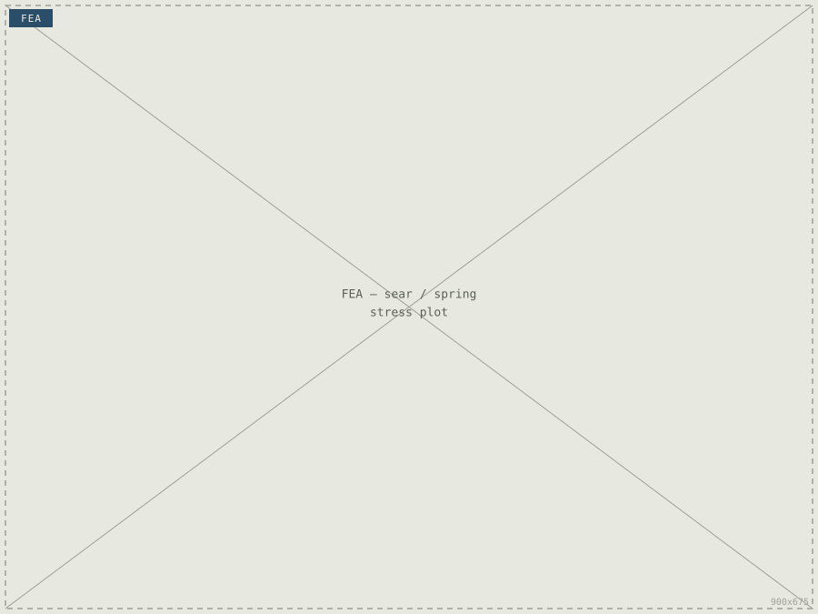
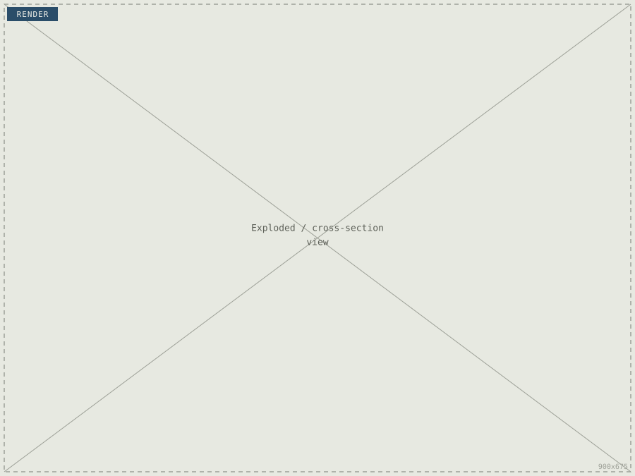
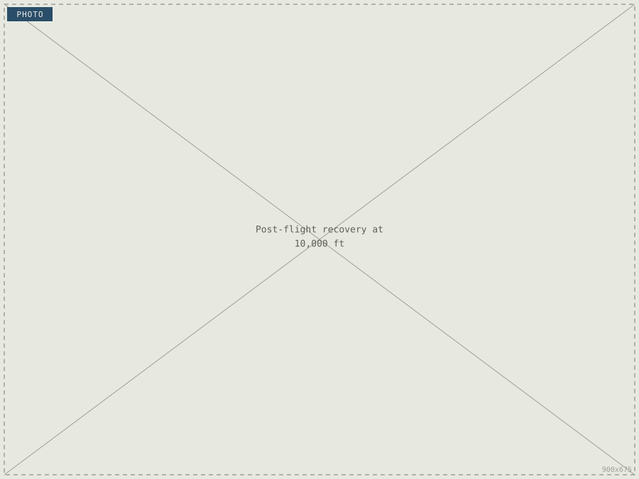

Big Unilateral Sear Spring System (BUSSS)
MHPR's first fully mechanical, non-pyrotechnic parachute deployment system — designed to remove black-powder charges from the recovery chain entirely.

Why mechanical, not pyrotechnic
Black-powder recovery charges are the industry-standard way to separate a rocket's airframe at apogee, but they come with real costs: consumables, range-safety paperwork, and a failure mode (a dud charge) that ends the flight badly. I set out to design a fully mechanical alternative for MHPR — a system that stores energy mechanically, releases it on command from the flight computer, and can be reset and re-tested on the bench without burning anything.
[Placeholder — add a sentence on how this project came about: was it your idea, a lesson learnt from a previous flight, a team requirement? The cover letter mentions this replaced an unreliable pyrotechnic setup — expand on that story here.]
What the mechanism had to do
Four constraints drove the design: reliably overcome a known retention load, survive flight loads, interface cleanly with the team's SRAD flight computer, and remain testable on the ground without a full flight.

Retention force
Sear and spring sized through iterative FEA to reliably overcome [X] N of retention force before release.

Structural margin
Sear/spring interface checked against flight loads with a minimum safety factor of [X].
Flight computer interface
Actuation trigger commanded by the SRAD flight computer at apogee via barometric altitude detection.
Ground-testability
Manual override retained so the full mechanism can be actuated and reset on the bench, no range required.
Mechanism & CAD
The mechanism uses a linear actuator to trip a spring-loaded sear. Releasing the sear vents a CO2-pressurised piston, which drives a separation ring to break the airframe joint and free the parachute. Everything is sized so the same hardware can be re-cocked and re-fired on the bench between flights.


[Placeholder — this is a good place for one specific engineering decision and why you made it: e.g. why a unilateral sear over a bilateral one, how you chose the spring rate, or a design iteration that failed and what you changed. Specificity here is what makes this page more convincing than the resume bullet.]
Structural validation
The sear/spring interface was modelled in ANSYS Mechanical to confirm it would reliably hold under flight loads while still releasing cleanly under actuation. [Placeholder — add a sentence on what the FEA showed: peak stress location, safety factor achieved, any geometry change that resulted from it.]
Build & assembly
[Placeholder — describe how the parts were made: CNC/manual machining, materials used, any tolerances that mattered (e.g. sear engagement surface), and how the CO2 piston and seals were sourced/sealed.]
From the bench to 10,000 ft
The mechanism went through repeated bench actuation testing before being cleared for flight — confirming reliable release under load, clean separation, and a repeatable reset cycle. It was then flown and successfully deployed at 10,000 ft AGL.

| Rev | Test | Result | Date |
|---|---|---|---|
| 01 | Bench actuation, unloaded | [Pass / result] | [date] |
| 02 | Bench actuation, rated load | [Pass / result] | [date] |
| 03 | Flight deployment, 10,000 ft AGL | Successful deployment | [date] |
What this proved, what's next
Removing pyrotechnics from the recovery chain cut per-flight consumable and range-safety costs, and gave the team a mechanism that can be fully tested before every flight instead of trusted on faith. [Placeholder — add the cost/mass delta vs. the old pyrotechnic system if you have it, e.g. "cutting recovery system cost by $[amount] and mass by [X] g".]
[Placeholder — one paragraph on what you'd change next time, or what the next iteration of BUSSS looks like. Friend's site does this well: be honest about what could have been explored further.]
← Back to all projects